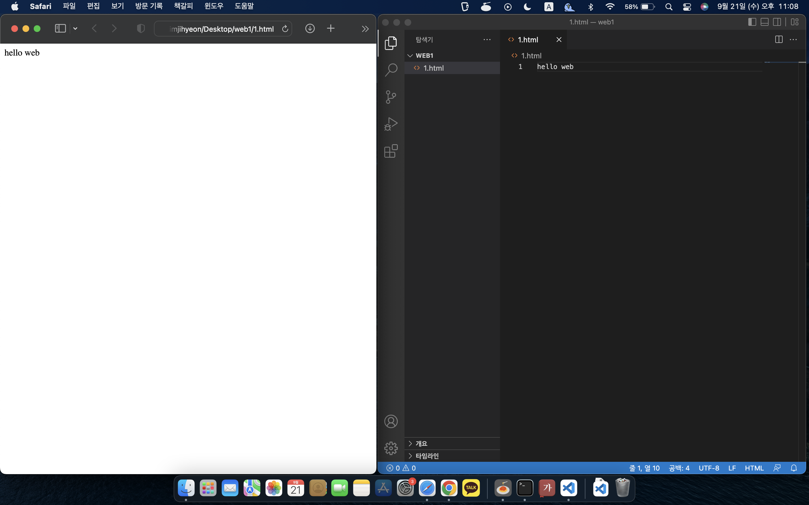

<!doctype html>
<html></html>
<head>
    <title> jihyunsHellowe welcome</title>
    <meta charset="utf-8">
</head>
<body>
    <h1><a href="index.html">지현의 first WEB</a></h1>
    <a href="https://www.w3.org/TR/2011/WD-html5-20110405/" 
    target="_blank" title="html5 specification">html= hiper text markup language</a>
   
    <ol>
        <li><a href="1.html">HTML</a></li>
        <li><a href="2.html">CSS</a></li>
        <li><a href="3.html">JavaScript</a></li>
    </ol>
    <p>
        <h3>웹, 인터넷의 역사</h3>
        인터넷은 컴퓨터 최소 두대가 필요 
        하나는 웹 브라우저, 하나는 웹 서버<br>
        웹 브라우저 는 정보를 요청 request =client computer
        웹 서버    는 정보를 응답 response =server computer<br>
        웹 브라우저는 추상적인 개념임 물질아님 그러나 익숙하니까 물질처럼 느껴짐<br>
        웹 서버는 다운받아서 쓰면되는 프로그랭임 익숙하지 않아서 추상적으로 느껴짐<br>
        공부=이해가 아니라 익숙해지는 것 익숙해지면 물질처럼 느껴짐<br>
        우리는웹브라우저는 충분히 잘 알고 있으니 웹 서버에 집중하자 
        우리가 만든 웹을 세계에 전파하자~~ <br>
        자신의 컴터에 설치하거나 , 웹 호스팅으로 인해 다른회사에 맡기는 방법이 있음 
        <br><br>
        서버는 항상 켜져있어야 하고 인터넷이 끊기면 안됨 <br>
        인터넷에 연결되 컴퓨터를 빌려주는 비즈니스 = 웹 호스팅 
        우리는 Github.com 이용<br>
        create repository

        <h3>웹에 동영상 추가</h3>
        <iframe width="560" height="315" src="https://www.youtube.com/embed/7T7r_oSp0SE" title="YouTube video player" frameborder="0" allow="accelerometer; autoplay; clipboard-write; encrypted-media; gyroscope; picture-in-picture" allowfullscreen></iframe>


    </p>
    <p style="margin-top:45px;">
        <h2> Welcome to Jihyun's first web!! </h2>
        how to control web?
        my <strong><u>first</u> project</strong>    
        
        
        www.advancedwebranking.com
        <br>frequency of chinese words 검색해본 사례 , 공부에 겁먹지 마라
        
        <br>unsplash.com
            <br>프론트엔드 다 뒤졌다 ㅋㅋ<br>
            
    </p>
    <br><br>
    <p>
        <h3>댓글기능 추가 from DISQUS </h3>
        <div id="disqus_thread"></div>
<script>
    /**
    *  RECOMMENDED CONFIGURATION VARIABLES: EDIT AND UNCOMMENT THE SECTION BELOW TO INSERT DYNAMIC VALUES FROM YOUR PLATFORM OR CMS.
    *  LEARN WHY DEFINING THESE VARIABLES IS IMPORTANT: https://disqus.com/admin/universalcode/#configuration-variables    */
    /*
    var disqus_config = function () {
    this.page.url = PAGE_URL;  // Replace PAGE_URL with your page's canonical URL variable
    this.page.identifier = PAGE_IDENTIFIER; // Replace PAGE_IDENTIFIER with your page's unique identifier variable
    };
    */
    (function() { // DON'T EDIT BELOW THIS LINE
    var d = document, s = d.createElement('script');
    s.src = 'https://web1-44znixftkd.disqus.com/embed.js';
    s.setAttribute('data-timestamp', +new Date());
    (d.head || d.body).appendChild(s);
    })();
</script>
<noscript>Please enable JavaScript to view the <a href="https://disqus.com/?ref_noscript">comments powered by Disqus.</a></noscript>
    </p>

    <h3>채팅기능 추가 tawk</h3>
    <!--Start of Tawk.to Script-->
<script type="text/javascript">
    var Tawk_API=Tawk_API||{}, Tawk_LoadStart=new Date();
    (function(){
    var s1=document.createElement("script"),s0=document.getElementsByTagName("script")[0];
    s1.async=true;
    s1.src='https://embed.tawk.to/632dd87437898912e96aecfd/1gdlhb2ft';
    s1.charset='UTF-8';
    s1.setAttribute('crossorigin','*');
    s0.parentNode.insertBefore(s1,s0);
    })();
    </script>
    <!--End of Tawk.to Script-->
</body>

<br><br>
<p>
<h3>TAG 정리 </h3>
</> <-얘네들이  ATG태그임
br은 줄바꿈 / p양 은 단략 / ul은 li 의 부모태그 둘다 목차 /<br> 
ul을 ol로 바꾸면 자동으로 넘버링 
/ ol 은 오더드 리스트 ul은 언오더드 리스트 / 표는 table /<br>
anchor -> 태그 a -> 링크 붙일때 target="_blank"는 새 창에다 띄움


</p>


